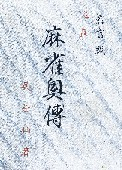
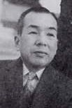
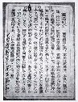
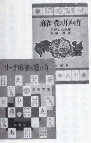

昭和25年７月に出版された自費出版本。そのため発行部数も少なく、最近まで書名と呉亭仙（ごていせん）という著者名のみしか知られなかった。おまけに呉亭仙名では「麻雀奥伝」しか出版されなかったため、浅学のσ(-_-)はすっかり中国本と思いこんでいた。(_
_； しかしこのたびご子息の手によって復刻され、それと同時に呉亭仙が戦前の麻雀人、高橋 博（たかはしひろし）の雀号であったことが判明した。

巻末の足跡によれば、高橋 博は明治43年愛媛県生まれ。麻雀の事跡はつまびらかではない。しかし昭和26年12月19日、愛媛新聞に掲載された本書の紹介記事は日本麻雀連盟３段 川北一郎という人物の執筆。
愛媛新聞掲載の紹介記事
そこで高橋 博が戦前主流であった日本麻雀連盟に関係していたことは確かと思われる。またリーチ麻雀の先導者
天野大三と深い親交があったという。その縁からか、後年
金園社から「リーチ麻雀の遊び方（昭和32年６月）」、「麻雀 役のガメリ方（昭和33年６月）」を出版している。※金園社は天野大三の著書を多数出版している。

「麻雀奥伝」は当時流行りだしたリーチ麻雀の戦術書。とはいえ二十二麻雀の影響が色濃く残る時代でもあり、今風に表現するならデジタルよりはアナログ的な戦術論が主体。しかし「理詰めの打ち方とは理にかなう打ち方を言うのであるが、欲をかかない打ち方としるべし」とか、「最後に一言すれば、雀戦においては巧緻よりもむしろ速度を尊ぶ」（p47）などは、現代のスピード麻雀にも通じる。
また「七や三には辺張待ちがある。そこで四または七が不要になったとき、原則として四を切る。同様に三と六は六を切る.」という記述は、まさに我が意を得たりの思い。
そして「積み場一翻縛り」（p65）の記述には、現在の常時一翻縛りルールの歴史をかいま見る。その意味で、本書は総ページ数90pの小冊子ながらリーチ麻雀揺籃期を知る貴重な資料となっている。
※雀号は戦前の多くの麻雀人が好んでつけた。鈴木郭郎（すずきひろお）の林茂光（りんもこう）、田中貞造（たなかていぞう）の天忠定（てんちゅうてい）などが有名。
|